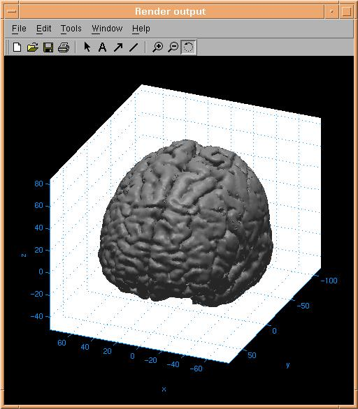

d3view Users tutorial (6): Rendering Window

The rendering window is used to render an image on basis of all the parameters
explained in the last section. The standard
matlab toolbar is used for zooming, rotating and for adding texts and
arrows. In the above figure 3d rotation is enabled. See your matlab documentation
for details.
Next tutorial item: Printing
and saving